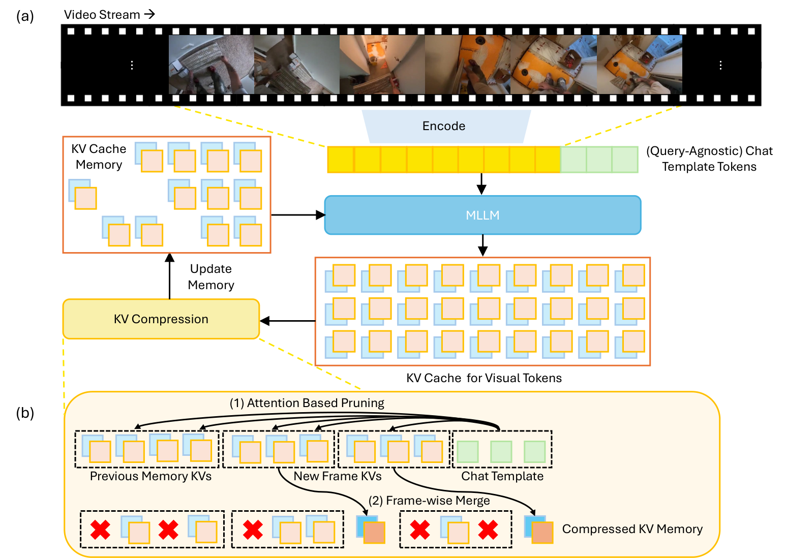
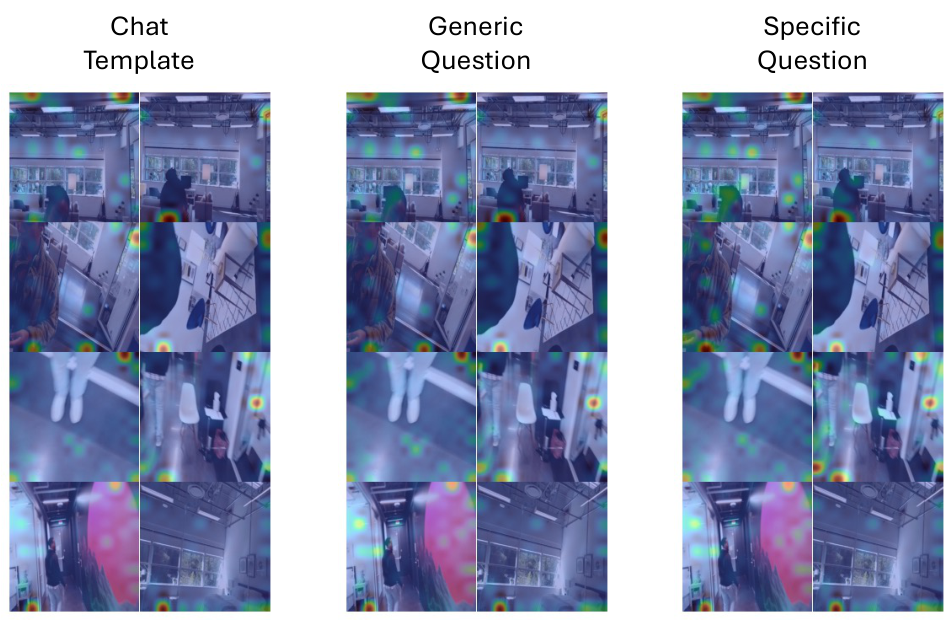

论文信息
| 研究问题 | 当视频持续到来、未来用户问题未知且显存固定时，如何让 MLLM 持续编码视频而不让 KV cache 随时长线性膨胀。 |
|---|---|
| 一句话 | StreamMem 以 chat template token 作为“通用问题”的代理，从视觉 KV 中选取高注意力证据，并与每帧 prototype 合并成固定预算的 KV memory。 |
| 适用边界 | 训练无关、query-agnostic 的视频理解缓存管理；不是机器人控制策略本身，但非常适合作为 VLA 历史记忆的缓存层。 |
1. 核心摘要
长视频 MLLM 的实际瓶颈不只是 context window：每一帧视觉 token 都会在每个 Transformer layer 生成 K/V，流式输入会使显存与 attention 计算随时间持续增加。已有离线压缩常假定完整视频或真实问题已知；而 ReKV 一类方案若保留全部历史 KV，又依赖 CPU/disk offloading，难以给连续交互提供稳定内存上限。StreamMem 处理的是更严格的设定：视频不断到来，用户问题可能在很晚才提出，系统仍须始终维持固定容量。
方法先通过帧相似度过滤削减输入冗余，再在每层以 chat template token 对视觉 token 的 cross-attention 作为 query relevance 的代理分数。超预算时保留 top-k 显著 KV；同时为每帧计算 attention-weighted 的 key/value prototype，和细粒度 token 一起保存。论文还采用 YaRN 延长视觉位置上下文而不粗暴重编号。以 Qwen2-VL-7B、24K KV 预算在 MLVU 上得到 66.3，高于 Full KV 的 65.9，也高于同预算 InfiniPot-V 的 65.7（Table 3）；这说明压缩不是必然只损失性能，但结论仍限定于其视频 QA 设置。
2. 研究动机
流式视频与离线长视频的假设不同
离线 VideoQA 可以先取得整段视频，再由已知问题指导采样或压缩；流式场景既不知道未来帧，也通常不知道未来问题。若在每个控制/观测周期都重新 prefill 历史，延迟不可接受；若累计全部 KV，内存则无界增长。作者因而将目标明确为每个时刻都能继续处理下一段视频、且 KV memory 大小与视频总时长无关。
“什么值得留下”不能只依赖最近性
滑动窗口可保证固定成本，但早期关键事件会被机械丢弃；仅按均匀采样，又可能错过短暂的语义变化。真实 query 不可用时，仍需一个通用的显著性信号。作者的观察是，MLLM 聊天模板中紧接 assistant 回复位置的 token 会诱导模型形成泛化的视频描述，这些 token 对视觉 token 的 attention 排名可近似“如果有人问这段视频发生了什么，哪些视觉证据最重要”。
仅剪枝会损失帧级整体状态
top-k token 保留局部细节，却可能让一个帧的全局状态消失。因而 StreamMem 同时保存显著 token 与每帧的加权 prototype：前者回答细节，后者以很小代价维持“这一时刻整体是什么样”的时间锚点。这一互补性是它比只做 eviction 更适合历史事件记忆的原因。
3. 方法论

Figure 2：视频片段先过滤近重复帧，再由代理 query 评分、选择 KV，并将帧原型与细粒度 KV 一同保留。
3.1 时间步数据流：滤帧 → 编码 → 合并旧记忆 → 压缩
在时间步 \(t\)，系统收到一段新视频帧 \(v_t\)。轻量过滤先去除近重复帧，保留帧经 vision encoder 与 MLLM 在每层产生 \(\{K_t^i,V_t^i\}\)。新 KV 与上一时刻的压缩记忆 \(\{{K'}_{t-1}^i,{V'}_{t-1}^i\}\) 一同参与 attention；随后 compression module 产生新的 \(\{{K'}_t^i,{V'}_t^i\}\)，供下一段视频使用。这里保存的是 transformer 的层级 K/V，不是另训的外部文本摘要。
3.2 Input Frame Filtering：在进入 MLLM 前去掉时间冗余
对相邻帧，论文用 vision encoder embedding 的 cosine similarity 度量相似度；超过阈值 \(\delta\) 则认为冗余，并以简单平均合并其表示。这样静态场景或高帧率视频不会先占满后续 KV 预算。作者在附录固定每个输入 chunk 为 8 帧，默认 \(\delta =0.95\)；消融（Table 6）中，无过滤 All=65.4，\(\delta =0.95\) 为 66.9，过强的 \(\delta =0.97\) 为 66.6，说明过滤阈值需要在冗余与细节之间折中。
3.3 Query-agnostic attention pruning：用 chat template 代理未来问题
保留的视觉 token 与辅助 query token 一起送入 MLLM。论文使用 <|im_end|> <|im_start|> assistant\n 作为代理，而不是提前编造用户问题。若该层 query 表示为 \(Q \in \mathbb{R}^{q \times d}\)，当前 clip 的 key/value 为 \(K_t^i,V_t^i \in \mathbb{R}^{n \times d}\)，则 attention 为：
\(A_t^i = \operatorname{Softmax}(Q(K_t^i)^T / \sqrt d)\)。
对 \(q\) 个模板 token 聚合后得到每个视觉 token 的 importance score；当总 cache 超过预算 \(M\) 时，各层按均分预算保留 score 最高的 top-k token。它是 query-agnostic，不等于无条件保留所有任务细节：Table 4 中真 query 的 All=68.1，chat template 为 66.9，差距主要体现在 multi-detail，因此作者也明确承认未知问题下无法完整保存所有未来可能需要的信息。

注意力可视化：并列展示代理 query 与具体问题 query 在视频帧上的视觉关注区域。
3.4 Frame-wise KV merging：细粒度 token 与帧原型并存
仅保留 top-k 是稀疏选择；StreamMem 还根据归一化 importance \(\alpha_j^i\) 为每帧计算 prototype：\(\bar K_t^i=\sum_j\alpha_j^i K_{t,j}^i\)，\(\bar V_t^i=\sum_j\alpha_j^i V_{t,j}^i\)。最终缓存混合两类项：显著 token 保持局部/对象细节，prototype 保持帧级全局信息。论文将 prototype 放到该帧选择 token 的末端，并通过 position IDs 维持帧级时序对齐。Table 5 中 no merging 的 All=65.6，simple average=66.3，attention-weighted merging=66.9；这支持“合并”而非纯删除，也支持以注意力加权替代均值。
3.5 Positional embedding 与在线推理
压缩后若给保留 token 重新编号，会破坏原始时空位置。作者采用 YaRN context-window extension 保持跨 streaming segment 的位置一致性；附录设置为 LLaVA-OneVision \(\lambda =8\)、Qwen2-VL \(\lambda =2\)、Qwen2.5-VL 不缩放。算法 1 的顺序是：取新 chunk、过滤、编码得到 K/V/score；若旧 cache 超预算先对旧项 top-k；再 append 新项并插入新帧 prototype。论文为 training-free 方法，没有新增训练目标；它改变的是推理期的输入过滤、KV 选择/合并和位置策略。
4. 实验与结果
设置。离线长视频评估包含 MLVU、EgoSchema、VideoMME（无字幕）；流式 QA 使用 RVS-Ego、RVS-Movie。模型覆盖 LLaVA-OneVision-7B、Qwen2-VL-7B、Qwen2.5-VL-3B；默认视频流为 0.5 FPS，每 clip 8 帧，实验可在一张 A100 上运行。LLaVA-OneVision 的离线比较约束 GPU memory 小于 24 GB，流式对比小于 28 GB。以下只列原文关键表格数据，不使用实验图片。
| 原文表格与条件 | 对照 | StreamMem | 解读 |
|---|---|---|---|
| Table 1，LLaVA-OneVision-7B，6K KV，MLVU | base 64.7；LiveVLM 66.3 | 66.9 | 固定 6K cache 下优于该表中的 base 和 LiveVLM。 |
| Table 1，LLaVA-OneVision-7B，VideoMME All | LiveVLM 57.3 | 59.4 | 对该 backbone 的全体 VideoMME 分数更高。 |
| Table 3，Qwen2-VL-7B，MLVU，24K KV | Full KV (50K) 65.9；InfiniPot-V 65.7 | 66.3 | 少于 Full KV 一半预算时超过该 full-cache 设置；不是所有模型/子集均超过 full KV。 |
| Table 2，RVS-Ego / RVS-Movie | ReKV 无 offloading：55.8/50.8 Acc | 57.6/52.7 Acc | 在固定显存流式设定下优于只留短期上下文的 ReKV；与有 offloading 的 ReKV 不可直接视为全面胜出。 |
关键消融。代理 chat template 的 All=66.9，与 generic text query 66.7 接近，但低于真实 query 的 68.1（Table 4）；这证明 proxy 可用但并非 query-aware 上界。加权 merge 的 All=66.9，高于 no merging 65.6（Table 5）。这些结果直接支持未来 VLA 将“通用代理 query”替换成任务指令、阶段 token 或 robot state token 的研究方向。
5. 优势与局限
| 优势 | 局限 / 迁移注意点 |
|---|---|
|
|
6. 总结
StreamMem 给出了一套比“长上下文 + 定期截断”更具工程闭环的方案：输入先去冗余，KV 再以代理 query 评分、按固定预算选择，并以帧 prototype 保留被压缩掉的整体状态。它最重要的贡献是把未知未来问题下的流式 KV 维护变成一个无需训练、持续可执行的过程。
用于 VLA 历史关键事件检测时，可保留它的三段式操作：普通时刻 reuse 或过滤，发生变化时 refresh 局部 KV，经 motion + appearance + robot-state 确认后 commit 事件级 KV/prototype。与 KEMO 的事件候选和 HERMES 的层级保留结合，才有机会让缓存选择真正对长程控制负责。